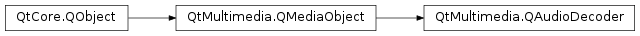

QAudioDecoder¶
Synopsis¶
Functions¶
- def
audioFormat() - def
bufferAvailable() - def
duration() - def
error() - def
errorString() - def
position() - def
read() - def
setAudioFormat(format) - def
setSourceDevice(device) - def
setSourceFilename(fileName) - def
sourceDevice() - def
sourceFilename() - def
state()
Signals¶
- def
bufferAvailableChanged(arg__1) - def
bufferReady() - def
durationChanged(duration) - def
error(error) - def
finished() - def
formatChanged(format) - def
positionChanged(position) - def
sourceChanged() - def
stateChanged(newState)
Static functions¶
- def
hasSupport(mimeType[, codecs=list()])
Detailed Description¶
The
PySide2.QtMultimedia.QAudioDecoderclass allows decoding audio.The
PySide2.QtMultimedia.QAudioDecoderclass is a high level class for decoding local audio media files. It is similar to thePySide2.QtMultimedia.QMediaPlayerclass except that audio is provided back through this API rather than routed directly to audio hardware, and playlists and network and streaming based media is not supported.See also
-
class
PySide2.QtMultimedia.QAudioDecoder([parent=nullptr])¶ Parameters: parent – PySide2.QtCore.QObjectConstruct an
PySide2.QtMultimedia.QAudioDecoderinstance parented toparent.
-
PySide2.QtMultimedia.QAudioDecoder.State¶ Defines the current state of a media player.
Constant Description QAudioDecoder.StoppedState The decoder is not decoding. Decoding will start at the start of the media. QAudioDecoder.DecodingState The audio player is currently decoding media.
-
PySide2.QtMultimedia.QAudioDecoder.Error¶ Defines a media player error condition.
Constant Description QAudioDecoder.NoError No error has occurred. QAudioDecoder.ResourceError A media resource couldn’t be resolved. QAudioDecoder.FormatError The format of a media resource isn’t supported. QAudioDecoder.AccessDeniedError There are not the appropriate permissions to play a media resource. QAudioDecoder.ServiceMissingError A valid playback service was not found, playback cannot proceed.
-
PySide2.QtMultimedia.QAudioDecoder.audioFormat()¶ Return type: PySide2.QtMultimedia.QAudioFormatReturns the current audio format of the decoded stream.
Any buffers returned should have this format.
-
PySide2.QtMultimedia.QAudioDecoder.bufferAvailable()¶ Return type: PySide2.QtCore.boolReturns true if a buffer is available to be read, and false otherwise. If there is no buffer available, calling the
PySide2.QtMultimedia.QAudioDecoder.read()function will return an invalid buffer.
-
PySide2.QtMultimedia.QAudioDecoder.bufferAvailableChanged(arg__1)¶ Parameters: arg__1 – PySide2.QtCore.bool
-
PySide2.QtMultimedia.QAudioDecoder.bufferReady()¶
-
PySide2.QtMultimedia.QAudioDecoder.duration()¶ Return type: PySide2.QtCore.qint64Returns total duration (in milliseconds) of the audio stream or -1 if not available.
-
PySide2.QtMultimedia.QAudioDecoder.durationChanged(duration)¶ Parameters: duration – PySide2.QtCore.qint64
-
PySide2.QtMultimedia.QAudioDecoder.error(error)¶ Parameters: error – PySide2.QtMultimedia.QAudioDecoder.Error
-
PySide2.QtMultimedia.QAudioDecoder.error() Return type: PySide2.QtMultimedia.QAudioDecoder.ErrorReturns the current error state.
-
PySide2.QtMultimedia.QAudioDecoder.errorString()¶ Return type: unicode
-
PySide2.QtMultimedia.QAudioDecoder.finished()¶
-
PySide2.QtMultimedia.QAudioDecoder.formatChanged(format)¶ Parameters: format – PySide2.QtMultimedia.QAudioFormat
-
static
PySide2.QtMultimedia.QAudioDecoder.hasSupport(mimeType[, codecs=list()])¶ Parameters: - mimeType – unicode
- codecs – list of strings
Return type: Returns the level of support an audio decoder has for a
mimeTypeand a set ofcodecs.
-
PySide2.QtMultimedia.QAudioDecoder.position()¶ Return type: PySide2.QtCore.qint64Returns position (in milliseconds) of the last buffer read from the decoder or -1 if no buffers have been read.
-
PySide2.QtMultimedia.QAudioDecoder.positionChanged(position)¶ Parameters: position – PySide2.QtCore.qint64
-
PySide2.QtMultimedia.QAudioDecoder.read()¶ Return type: PySide2.QtMultimedia.QAudioBufferRead a buffer from the decoder, if one is available. Returns an invalid buffer if there are no decoded buffers currently available, or on failure. In both cases this function will not block.
You should either respond to the
PySide2.QtMultimedia.QAudioDecoder.bufferReady()signal or check thePySide2.QtMultimedia.QAudioDecoder.bufferAvailable()function before calling to make sure you get useful data.
-
PySide2.QtMultimedia.QAudioDecoder.setAudioFormat(format)¶ Parameters: format – PySide2.QtMultimedia.QAudioFormatSet the desired audio format for decoded samples to
format.This property can only be set while the decoder is stopped. Setting this property at other times will be ignored.
If the decoder does not support this format,
PySide2.QtMultimedia.QAudioDecoder.error()will be set toFormatError.If you do not specify a format, the format of the decoded audio itself will be used. Otherwise, some format conversion will be applied.
If you wish to reset the decoded format to that of the original audio file, you can specify an invalid
format.
-
PySide2.QtMultimedia.QAudioDecoder.setSourceDevice(device)¶ Parameters: device – PySide2.QtCore.QIODeviceSets the current audio
PySide2.QtCore.QIODevicetodevice.When this property is set any current decoding is stopped, and any audio buffers are discarded.
You can only specify either a source filename or a source
PySide2.QtCore.QIODevice. Setting one will unset the other.
-
PySide2.QtMultimedia.QAudioDecoder.setSourceFilename(fileName)¶ Parameters: fileName – unicode Sets the current audio file name to
fileName.When this property is set any current decoding is stopped, and any audio buffers are discarded.
You can only specify either a source filename or a source
PySide2.QtCore.QIODevice. Setting one will unset the other.
-
PySide2.QtMultimedia.QAudioDecoder.sourceChanged()¶
-
PySide2.QtMultimedia.QAudioDecoder.sourceDevice()¶ Return type: PySide2.QtCore.QIODeviceReturns the current source
PySide2.QtCore.QIODevice, if one was set. IfPySide2.QtMultimedia.QAudioDecoder.setSourceFilename()was called, this will be 0.
-
PySide2.QtMultimedia.QAudioDecoder.sourceFilename()¶ Return type: unicode Returns the current file name to decode. If
PySide2.QtMultimedia.QAudioDecoder.setSourceDevice()was called, this will be empty.
-
PySide2.QtMultimedia.QAudioDecoder.start()¶ Starts decoding the audio resource.
As data gets decoded, the
PySide2.QtMultimedia.QAudioDecoder.bufferReady()signal will be emitted when enough data has been decoded. CallingPySide2.QtMultimedia.QAudioDecoder.read()will then return an audio buffer without blocking.If you call
PySide2.QtMultimedia.QAudioDecoder.read()before a buffer is ready, an invalid buffer will be returned, again without blocking.
-
PySide2.QtMultimedia.QAudioDecoder.state()¶ Return type: PySide2.QtMultimedia.QAudioDecoder.State
-
PySide2.QtMultimedia.QAudioDecoder.stateChanged(newState)¶ Parameters: newState – PySide2.QtMultimedia.QAudioDecoder.State
-
PySide2.QtMultimedia.QAudioDecoder.stop()¶ Stop decoding audio. Calling
PySide2.QtMultimedia.QAudioDecoder.start()again will resume decoding from the beginning.
© 2018 The Qt Company Ltd. Documentation contributions included herein are the copyrights of their respective owners. The documentation provided herein is licensed under the terms of the GNU Free Documentation License version 1.3 as published by the Free Software Foundation. Qt and respective logos are trademarks of The Qt Company Ltd. in Finland and/or other countries worldwide. All other trademarks are property of their respective owners.